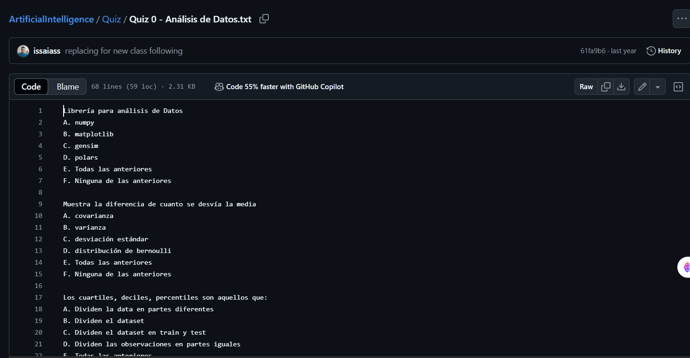

<!DOCTYPE html>
<html lang="es">
<head>
  <meta charset="UTF-8" />
  <meta name="viewport" content="width=device-width, initial-scale=1.0"/>
  <title>JK Portfolio | Home</title>
  <link rel="stylesheet" href="https://cdnjs.cloudflare.com/ajax/libs/font-awesome/6.4.0/css/all.min.css"/>
  <link href="https://fonts.googleapis.com/css2?family=Poppins:wght@400;700&display=swap" rel="stylesheet">
  <style>
    :root {
      --primary: #a86dff;
      --primary-light: #d5b7ff;
      --background: #0f0f0f;
      --text: #f0f0f0;
      --card-bg: #1a1a1a;
    }

    * {
      margin: 0;
      padding: 0;
      box-sizing: border-box;
    }

    html, body {
      height: 100%;
      font-family: 'Poppins', sans-serif;
      background: var(--background);
      color: var(--text);
      overflow-x: hidden;
    }

    body {
      display: flex;
    }

    .animated-bg {
      position: fixed;
      top: 0;
      left: 0;
      width: 100vw;
      height: 100vh;
      z-index: 0;
      overflow: hidden;
      pointer-events: none;
    }

    .animated-bg svg {
      position: absolute;
      top: 0;
      left: 0;
      width: 100%;
      height: 100%;
      transform: rotate(180deg);
    }

    .sidebar {
      width: 250px;
      background: #161616;
      height: 100vh;
      padding: 20px;
      transition: width 0.3s ease;
      position: relative;
      z-index: 2;
    }

    .sidebar.closed {
      width: 60px;
    }

    .sidebar .toggle-btn {
      position: absolute;
      top: 20px;
      right: -15px;
      background: var(--primary);
      color: #000;
      border-radius: 50%;
      width: 30px;
      height: 30px;
      display: flex;
      align-items: center;
      justify-content: center;
      cursor: pointer;
    }

    .sidebar h2 {
      color: var(--primary);
      margin-bottom: 40px;
      transition: opacity 0.3s;
    }

    .sidebar.closed h2 {
      opacity: 0;
    }

    .sidebar ul {
      list-style: none;
    }

    .sidebar ul li {
      margin: 20px 0;
      cursor: pointer;
      transition: all 0.3s;
      padding: 10px;
      border-radius: 8px;
      display: flex;
      align-items: center;
      gap: 10px;
      color: var(--text);
    }

    .sidebar ul li:hover {
      background: var(--primary);
      color: #000;
    }

    .sidebar.closed ul li span {
      display: none;
    }

    .content {
      flex: 1;
      padding: 60px;
      background: radial-gradient(circle at center, rgba(255,255,255,0.03), transparent 70%), var(--background);
      position: relative;
      z-index: 1;
    }

    .section {
      opacity: 0;
      transform: translateY(30px);
      animation: fadeSlideIn 1s ease forwards;
    }

    @keyframes fadeSlideIn {
      to {
        opacity: 1;
        transform: translateY(0);
      }
    }

    header h1 {
      font-size: 3rem;
      color: var(--primary);
      animation: fadeSlideIn 1.2s ease forwards;
    }

    header p {
      font-size: 1.2rem;
      color: var(--primary-light);
      margin-top: 10px;
    }

    .intro {
      margin-top: 30px;
      font-size: 1rem;
      color: #ccc;
    }

    .intro a {
      color: var(--primary);
      font-weight: bold;
      text-decoration: none;
      transition: all 0.3s;
    }

    .intro a:hover {
      text-shadow: 0 0 10px var(--primary);
    }

    .card {
      background: var(--card-bg);
      padding: 20px;
      border-left: 5px solid var(--primary);
      border-radius: 12px;
      margin-top: 30px;
      box-shadow: 0 4px 20px rgba(168, 109, 255, 0.15);
      transition: transform 0.4s ease, box-shadow 0.4s;
    }

    .card:hover {
      transform: translateY(-10px);
      box-shadow: 0 8px 30px rgba(168, 109, 255, 0.3);
    }

    .card h3 {
      color: var(--primary-light);
    }

    .card button {
      margin-top: 15px;
      padding: 10px 18px;
      background: var(--primary);
      color: #000;
      font-weight: bold;
      border: none;
      border-radius: 8px;
      cursor: pointer;
      transition: background 0.3s;
    }

    .card button:hover {
      background: var(--primary-light);
    }

    footer {
      margin-top: 60px;
      text-align: center;
      font-weight: bold;
      color: var(--primary-light);
      font-size: 0.9rem;
    }

    canvas {
      margin-top: 20px;
      border-radius: 10px;
      background: #1e1e1e;
      box-shadow: 0 0 10px rgba(168,109,255,0.5);
    }

    .game-container {
      margin-top: 40px;
      text-align: center;
    }

    .game-container button {
      margin-top: 10px;
      padding: 10px 20px;
      background: var(--primary);
      border: none;
      border-radius: 10px;
      color: #000;
      font-weight: bold;
      cursor: pointer;
      transition: all 0.3s;
    }

    .game-container button:hover {
      background: var(--primary-light);
    }

    @media (max-width: 768px) {
      body {
        flex-direction: column;
      }

      .sidebar {
        width: 100%;
        height: auto;
        flex-direction: row;
        overflow-x: auto;
      }

      .sidebar .toggle-btn {
        display: none;
      }

      .sidebar h2 {
        display: none;
      }

      .sidebar ul {
        display: flex;
        flex-direction: row;
        gap: 10px;
      }

      .sidebar ul li {
        flex: 1;
        justify-content: center;
        font-size: 0.8rem;
      }

      .content {
        padding: 20px;
      }
    }
  </style>
</head>
<body>
  <div class="animated-bg">
    <svg viewBox="0 0 1200 200" preserveAspectRatio="none">
      <path d="M0,100 C300,200 900,0 1200,100 L1200,200 L0,200 Z" fill="rgba(168,109,255,0.05)">
        <animate attributeName="d" dur="15s" repeatCount="indefinite" values="
          M0,100 C300,200 900,0 1200,100 L1200,200 L0,200 Z;
          M0,100 C400,0 800,200 1200,100 L1200,200 L0,200 Z;
          M0,100 C300,200 900,0 1200,100 L1200,200 L0,200 Z
        " />
      </path>
    </svg>
  </div>
  <!-- El resto del contenido HTML permanece igual -->
</body>
</html>

  
<body>
  <div class="sidebar" id="sidebar">
    <div class="toggle-btn" onclick="toggleSidebar()">
      <i class="fas fa-chevron-left"></i>
    </div>
    <h2>JK Portfolio</h2>
    <ul>
      <li onclick="showSection('home')"><i class="fas fa-home"></i> <span>Home Page</span></li>
      <li onclick="window.location.href='about.html'"><i class="fas fa-user"></i> <span>Sobre mí</span></li>
      <li onclick="showSection('labs')"><i class="fas fa-vial"></i> <span>Laboratorios</span></li>
      <li onclick="showSection('tasks')"><i class="fas fa-tasks"></i> <span>Tareas</span></li>
      <li onclick="showSection('quizzes')"><i class="fas fa-clipboard-check"></i> <span>Quizzes</span></li>
      <li onclick="showSection('project')"><i class="fas fa-rocket"></i> <span>Proyecto Final</span></li>
    </ul>
  </div>


<div class="content">
  <div id="home" class="section">
    <header>
      <h1>Portafolio de Proyectos 2025 - Cuatrimestre II</h1>
      <p>Jalal Kaddoura | Inteligencia Artificial</p>
    </header>
    <div class="intro">
      <p>Este sitio presenta mis trabajos realizados durante el Cuatrimestre II. Incluye laboratorios, tareas, quizzes y el proyecto final. Puedes ver más en mi <a href="https://github.com/Jalalk123" target="_blank">GitHub</a>.</p>
    </div>

    <div class="game-container">
      <h3>🎮 Minijuego: No dejes caer la pelota</h3>
      <button onclick="startGame()">Iniciar Juego</button><br/>
      <canvas id="gameCanvas" width="400" height="300"></canvas>
    </div>
  </div>

  <div id="labs" class="section hidden">
    <h2>Laboratorios</h2>
    <div class="card">
      <h3>🔬 Laboratorio 1</h3>
      <p><strong>Descripción:</strong> En este laboratorio se configuró nuestro GitHub Dashboard personal.</p>
      
      <p><strong>Resultados:</strong> Se puede observar en la imagen el dashboard personal de Github, que fue realizado con un constructor de dashboard que te da el codigo para hacer mas llamativo tu perfil, lo cual puede hacerte destacar en el entorno de Github.</p>
      <button onclick="window.open('https://github.com/Jalalk123', '_blank')">Ver en GitHub</button>
    </div>
       <div class="card">
      <h3>🔬 Laboratorio 2</h3>
      <p><strong>Descripción:</strong> Pendiente</p>
      
      <p><strong>Resultados:</strong> Por Realizar</p>
      <button onclick="window.open('https://github.com/Jalalk123', '_blank')">Ver en GitHub</button>
    </div>
  </div>

  <div id="tasks" class="section hidden">
    <h2>Tareas</h2>
    <div class="card">
      <h3>📄 Tarea 1</h3>
      <p><strong>Descripción:</strong> Desarrollo de una página web personal para publicación en GitHub Pages.</p>
      
      <p><strong>Resultados:</strong> Se tiene como resultado web funcional y publicada correctamente con diseño moderno y responsivo, decidí hacerla mas al estilo web app, con una especie de dashboard, con distintas secciones para cada cosa. Además, de una seccion de "Sobre Mí".</p>
      <button onclick="window.open('https://jalalk123.github.io/index.html', '_blank')">Ver en GitHub</button>
    </div>
  </div>

  <div id="quizzes" class="section hidden">
    <h2>Quizzes</h2>
    <div class="card">
      <h3>📝 Quiz 1</h3>
      <p><strong>Descripción:</strong> Preguntas Base de IA y Análisis de datos</p>
      
      <p><strong>Resultados:</strong> Respuestas de Seleccion multiple realizadas</p>
       <button onclick="window.open('https://github.com/Jalalk123/Quiz-1/blob/main/Quiz%20Resuelto', '_blank')">Ver en GitHub</button>  
  </div>

  <div id="project" class="section hidden">
    <h2>Proyecto Final</h2>
    <div class="card">
      <h3>Proyecto Final(Sin decidir)</h3>
      <p><strong>Descripción:</strong> Aún por decidir y realizar</p>
      
      <p><strong>Resultados:</strong> Aún en proceso de ideación</p>
      <button onclick="window.open('https://github.com/tu-usuario/chatbot-basico', '_blank')">Ver en GitHub</button>
    </div>
  </div>

  <footer>
    © 2025 | Desarrollado por Jalal Kaddoura
  </footer>
</div>


  <script>
    function showSection(id) {
      document.querySelectorAll('.section').forEach(sec => sec.classList.add('hidden'));
      document.getElementById(id).classList.remove('hidden');
    }

    function toggleSidebar() {
      const sidebar = document.getElementById('sidebar');
      sidebar.classList.toggle('closed');
    }

    let canvas, ctx, ballX, ballY, ballDX, ballDY, paddleX, paddleWidth = 80, paddleHeight = 10, gameInterval, isPlaying = false;

    function startGame() {
      if (isPlaying) return;
      isPlaying = true;

      canvas = document.getElementById('gameCanvas');
      ctx = canvas.getContext('2d');

      ballX = canvas.width / 2;
      ballY = canvas.height / 2;
      ballDX = 2;
      ballDY = -2;
      paddleX = (canvas.width - paddleWidth) / 2;

      document.addEventListener("keydown", keyDownHandler);

      gameInterval = setInterval(draw, 10);
    }

    function keyDownHandler(e) {
      const step = 20;
      if (e.key === "ArrowRight" && paddleX < canvas.width - paddleWidth) {
        paddleX += step;
      } else if (e.key === "ArrowLeft" && paddleX > 0) {
        paddleX -= step;
      }
    }

    function draw() {
      ctx.clearRect(0, 0, canvas.width, canvas.height);

      ctx.beginPath();
      ctx.arc(ballX, ballY, 10, 0, Math.PI * 2);
      ctx.fillStyle = "#a86dff";
      ctx.fill();
      ctx.closePath();

      ctx.beginPath();
      ctx.rect(paddleX, canvas.height - paddleHeight - 10, paddleWidth, paddleHeight);
      ctx.fillStyle = "#d5b7ff";
      ctx.fill();
      ctx.closePath();

      ballX += ballDX;
      ballY += ballDY;

      if (ballX + ballDX > canvas.width - 10 || ballX + ballDX < 10) {
        ballDX = -ballDX;
      }
      if (ballY + ballDY < 10) {
        ballDY = -ballDY;
      }

      if (
        ballY + ballDY > canvas.height - paddleHeight - 10 &&
        ballX > paddleX &&
        ballX < paddleX + paddleWidth
      ) {
        ballDY = -ballDY;
      }

      if (ballY + ballDY > canvas.height) {
        clearInterval(gameInterval);
        isPlaying = false;
        alert(" Juego terminado. ¡La pelota cayó!");
      }
    }
  </script>
</body>
</html>
